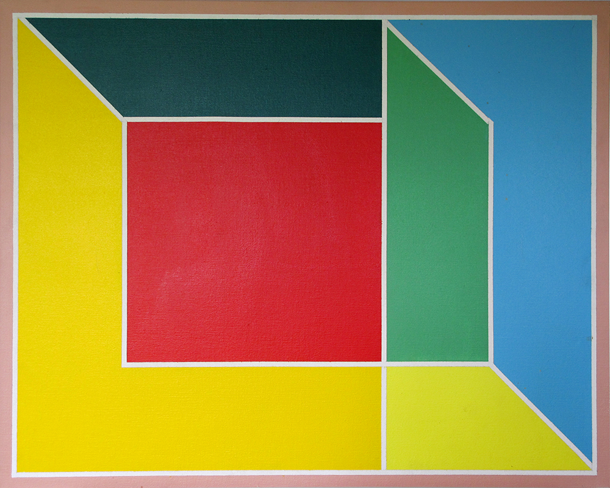
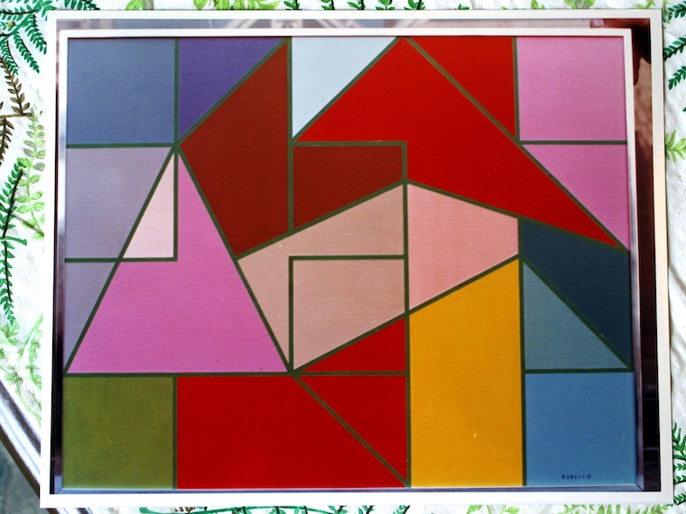
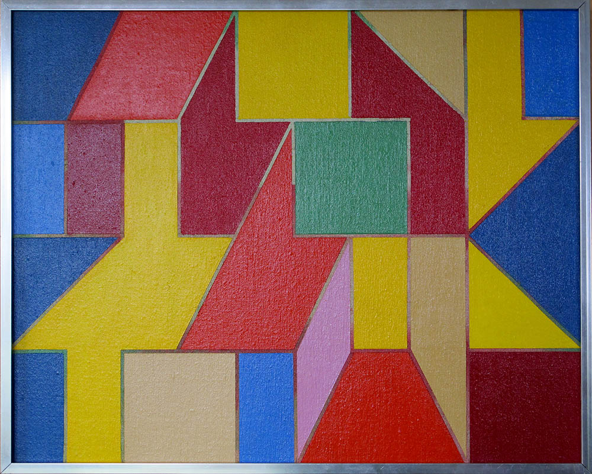

What is the relationship of David Rubello's work to geometry? Color Cubes, like many of his paintings from the 1960s and '70s, can be categorized as "hard-edge" ," the generic child of geometric abstraction and color field painting : neat, depersonalized, anti-representational, unpainterly, concerned primarily with the interplay between clearly defined, pure color geometric forms.
But Rubello's geometry is an "irrational geometry," to borrow a phrase from Werner Spies' 1970 analysis of the work of Josef Albers . Spies might as well be referring to Rubello when he writes that Albers is, in fact,
…not concerned with geometry. [He] is in search of forms which will pierce through the assurance of the geometric order. One could actually speak of geometric surrealism….The geometric play with perspective creates pictures which continuously collapse….
[He] provokes in the spectator an uncertainty by superimposing contrary interpretations which are mutually exclusive. The spectator remains uncertain--he is incapable of deciding in favor of one interpretation of the other. He may momentarily prefer one and may make an effort to concentrate on it. But as soon as this concentration diminishes, the picture offers him further, indecisive structures. This vacillating attempt to read the picture, the uncertainty and turbulence of perception--that is the actual content of the illustration.16
Robert A. Yassin, assistant director of the University of Michigan Museum of Art in 1973, writes the following of Rubello's particular approach to geometric abstraction:
Extraordinary variety is achieved within the narrow context of linear geometric projections and pure colors in simple combinations and subtle juxtapositions. The little shapes of color and line open up space, then suddenly close it, establishing at one and the same time the artificial perspective schema on the two-dimensional surface while destroying it and thus underscoring its artificiality. Although all his works are related stylistically to one another and proceed from the same theoretical base, each is unique, conceived independently from every other work, and each achieves its own interior rhythm and sense of balance of line and color.14
Rubello is primarily a figurative painter until he is introduced to geometric abstraction by Richard Mortensen, his teacher at the Royal Danish Academy of Fine Arts from 1963 to 1966.
See COLOR CUBES , RICHARD MORTENSEN , PERCEPTION , and PERSPECTIVE .